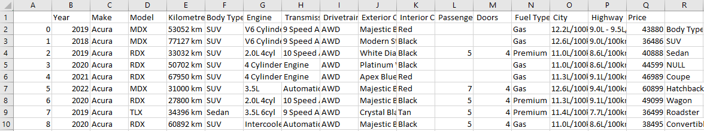
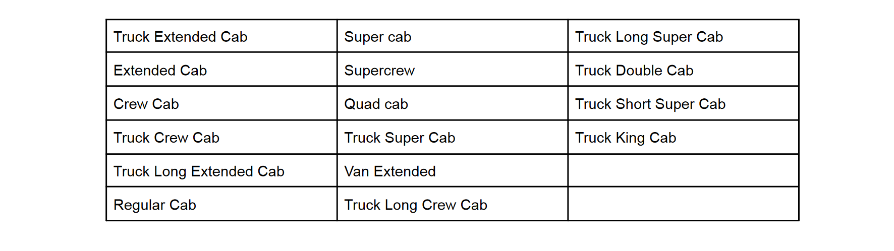
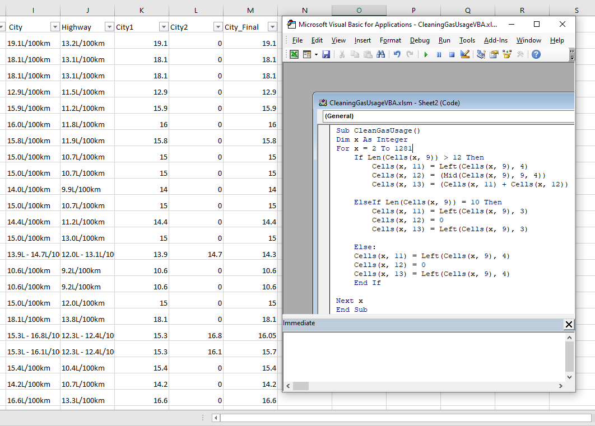
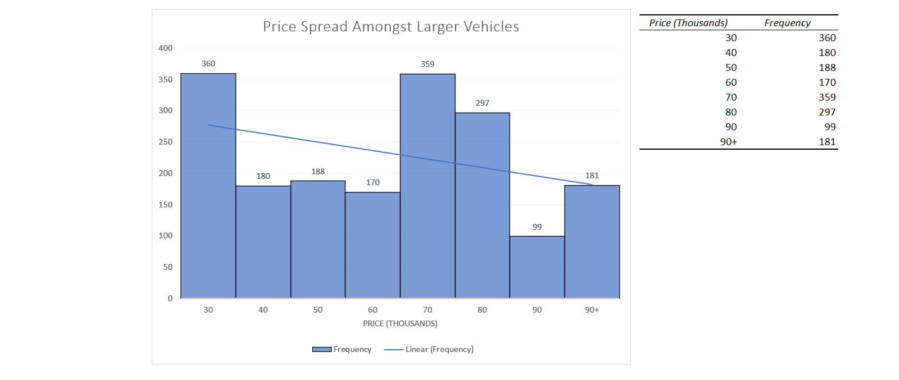
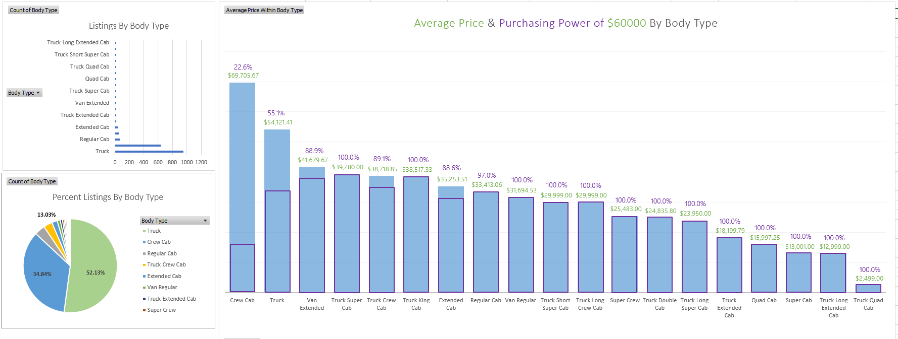

Used Cars Market
Excel, VBA, SQL
A Case Study on 24,199 Used Vehicles For Sale Within 25 km Proximity of Downtown Toronto.
Dataset Obtained From Kaggle.
Objective: What does toronto's used car market look like for a roofing company with a budget of $60,000? Which vehicles fit their business? Which vehicles can they buy?
Note: The question of "which vehicle should they buy" would be best answered through a machine learning price prediction model, but that is currently out of my depth.
Summary:
Identified an actionable dataset subset to match vehicle necessities for a roofing company
Cleaned/Wrangled the data through Excel
----Wrote a function to convert scraped gas usage data entries into an analytics friendly format
Created a price distribution histogram for the larger vehicles subset
Created pivot charts illustrating market share by body type of vehicle
Wrote SQL queries to return the % of listings by body type within budget
Objects of Interest: Gain insights and understanding of the used car market
from the perspective of an interested roofing company
Here is the inital .csv, but where do we begin? 
Well, roofing companies want lots of space. So a good start is to clean and analyze our data for larger vehicles. That being said how do we define larger vehicles? We have total of 31 unique body types. Since the number of unique body types is relatively small, we can manually research which vehicles are suitable. We define this set as the larger vehicles.
Since we want to focus only on these defined larger vehicles, let's create a subset of the inital data with which
we can then clean and begin to analyze...
1. Delete the rows which held body types that were not part of our larger vehicle set
2. Removed any duplicates through Excel's built in duplicate removal feature
3. Remove any rows with NULL "Kilometers", "Price", "Body Type" since they are crucial pieces of information.
4. Cleaned the gas consumption columns into simple integers, using the average value when given a range
I used VBA for task 4, but if the dataset were larger I'd likely use Python Pandas or SQL.


With the subset data cleaned to a reasonable degree, we can then generate this dashboard focusing on market share,
average price, and the purchasing power of our budget, all categorized by body type:

*The purchasing power percentages were calculated within MySQL through CTEs:
WITH cte_filtered AS (SELECT Body_Type, Price FROM used_cars_truck.price_data WHERE price <= 60000),cte_count AS (Select Body_Type, COUNT(Body_Type) AS "ListingsUnder60000" from cte_filtered group by Body_Type),
cteTotal AS (Select Body_Type, COUNT(Body_Type) AS "TotalListings" from used_cars_truck.price_data group by Body_Type)
SELECT cte_count.Body_Type, cte_count.ListingsUnder60000, cteTotal.TotalListings, (ListingsUnder60000/TotalListings) AS "Percentage Within Budget" from cte_count join cteTotal on cte_count.Body_Type = cteTotal.Body_Type;
*Terrible for efficiency but was a great SQL exercise
We see that there are two leading body types which dominate the market: "Truck" and "Crew Cab" with a staggering 52.13% and 34.84%, respectively. Another way to see this disparity, group together all the larger vehicles outside of the top 2 and they together only make up 13.03% of the listings.
Furthermore, even if we strip away percentages from the question, we see that "Truck" stands at the top with exactly 956 listings, still relatively far ahead of "Crew Cabs" following behind with 639; yet the third highest body type, "Regular Cab", is practically a rare sighting with a listing total of 67.
It is worth noting that not only does this analysis give us valuable insight into the current market of what we consider used larger vehicles, but also that any body type class not named "Truck" or "Crew Cab" is not worth analyzing independently in this case study simply due to the low number of data regarding them.
In terms of the average price and purchasing power visualization, we see that the average price of Crew Cab's far exceed the rest of the body types. Through this visualization, we gain the insight that with our current budget of $60,000, we can only consider a small portion of the Crew Cabs, specifically only 22.6% of the bottom-priced listings. Meanwhile for Trucks, our purchasing power looks stronger with us having the budget to consider 55.1% of the total truck listings.
With the remaining body types of such low count value, the only thing we can really say is that our budget seems to cover the majority of the rare listings of vehicles not named "Crew Cab" or "Truck".